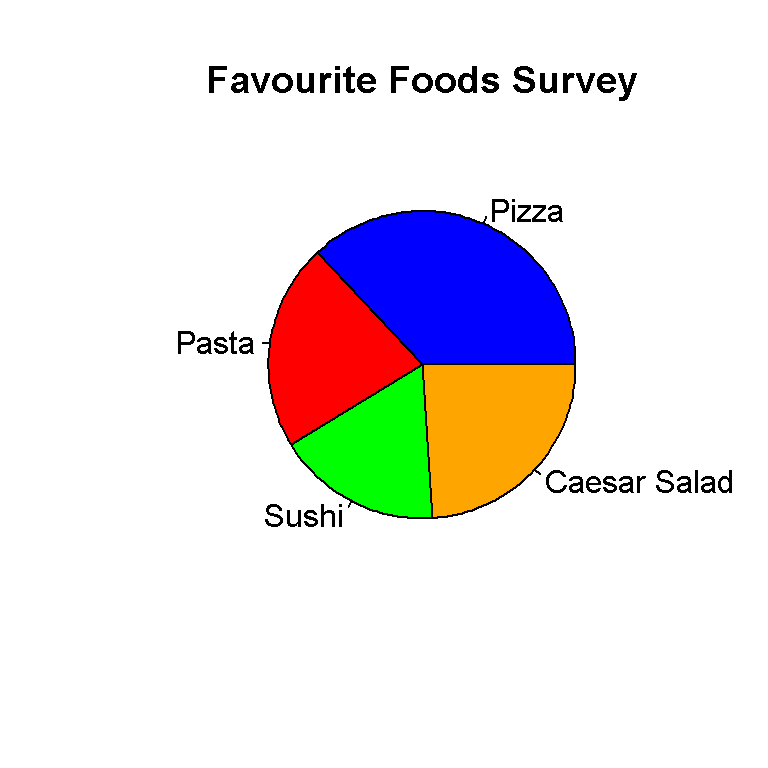
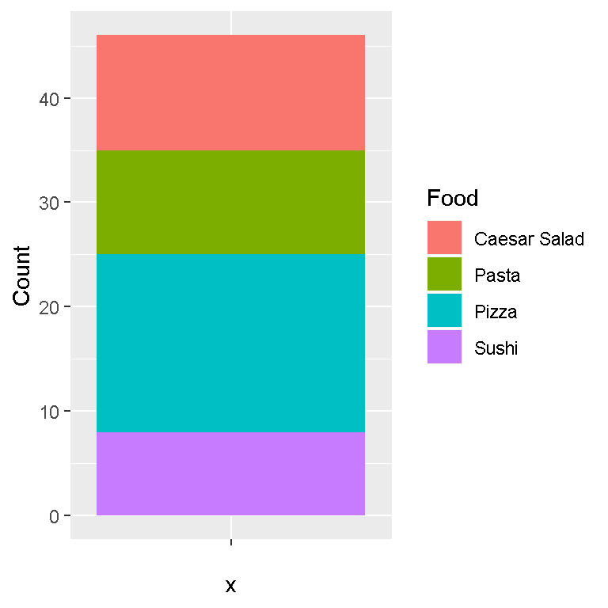
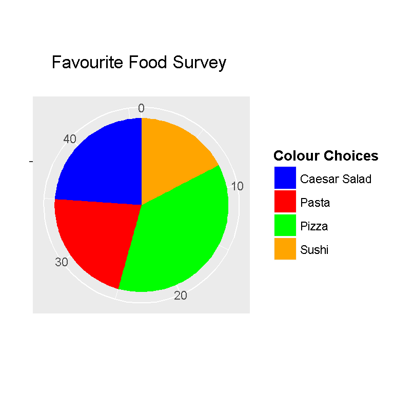
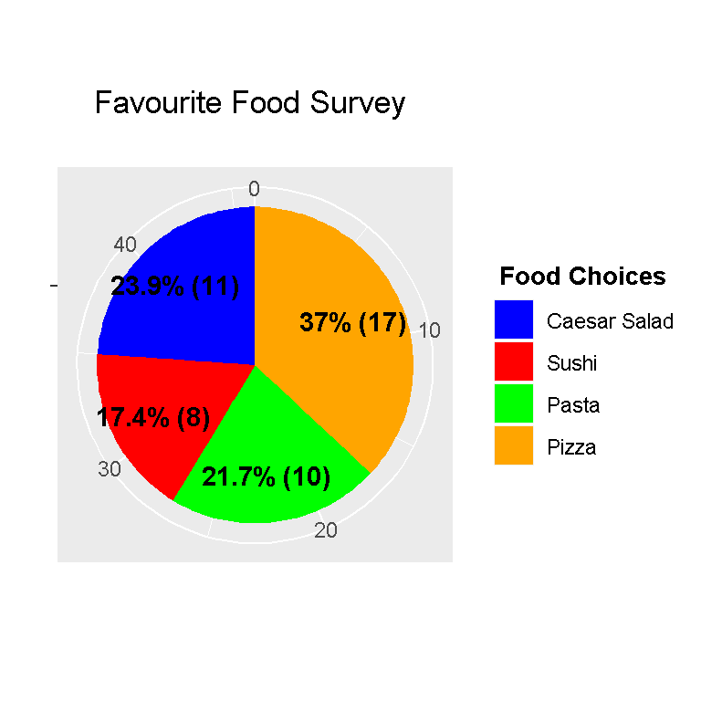

Hi there. I have played around with making pie charts in the statistical programming language R. The pie charts shown here are from the base R package and from the ggplot2 data visualization package.
For the pie chart, I am creating a fake sample dataset. This data table will contain favourite food choices and their counts from a survey.
The food choices are Pizza, Pasta, Sushi, and Caesar Salad.
food_choices <- c("Pizza", "Pasta", "Sushi", "Caesar Salad")
counts <- c(17, 10, 8, 11)
table <- data.frame(food_choices, counts) # Create data frame
You can check the contents of the table by typing out table and/or using the str() command in R.
# Check table:
table## food_choices counts
## 1 Pizza 17
## 2 Pasta 10
## 3 Sushi 8
## 4 Caesar Salad 11# Check structure of table:
str(table)## 'data.frame': 4 obs. of 2 variables:
## $ food_choices: Factor w/ 4 levels "Caesar Salad",..: 3 2 4 1
## $ counts : num 17 10 8 11
The column names in the table can be changed as well by using colnames().
colnames(table) <- c("Food", "Count")
# Check:
table## Food Count
## 1 Pizza 17
## 2 Pasta 10
## 3 Sushi 8
## 4 Caesar Salad 11
One could compute the total number of people in this food survey. (Add from top to bottom of second column in table.)
# Total Counts In Survey:
total_count <- sum(table[,2])
total_count## [1] 46
In base R, the pie() function is used to create a pie chart. The pie() function requires many arguments. In this example, I use x, labels, col (colours), and main (title).
## Base R Pie Chart With Labels:
pie(table[, 2], labels = table[,1],
col = c("Blue", "Red", "Green", "Orange"),
main = "Favourite Foods Survey")
This pie chart from base R looks okay but I rather use ggplot2 for this. Also, I have not added in percentage labels here. One could find out how to do it somewhere online.
The ggplot2 package in R is very good for data visuals. ggplot2 allows R users to create pie charts, bar graphs, scatter plots, regression lines and more.
Load the ggplot2 package using this code below.
library(ggplot2)
In ggplot2, the pie chart follows from the bar graph. This next lines of codes shows why a bar graph is not that good for displaying this data.
# Why Barplot Is Not A Good Visual:
ggplot(table, aes(x = "", y = Count, fill = Food)) +
geom_bar(width = 1, stat = "identity")
To create the actual pie chart more code is needed on top of the existing code for the bar graph. The main line of code is coord_polar(theta = "y", start = 0) which will convert the bar graph into a pie (circular) graph.
# Pie Chart:
ggplot(table, aes(x = "", y = Count, fill = Food)) +
geom_bar(width = 1, stat = "identity") +
coord_polar(theta = "y", start = 0) +
scale_fill_manual(values = c("Blue", "Red", "Green", "Orange")) +
labs(x = "", y = "", title = "Favourite Food Survey \n",
fill = "Colour Choices") +
theme(plot.title = element_text(hjust = 0.5),
legend.title = element_text(hjust = 0.5, face="bold", size = 10))
From the previous code, scale_fill_manual() allows for colour choices in the pieces of the pie chart. The labs() function allows for customization of the title and labels. The theme() functions allows for customization of the appearance of the title.
The pie chart above is very nice but it could use percentage labels. Adding the percentage labels takes a bit of work here but it is manageable.
The dplyr package for data manipulation and data wrangling is loaded into R.
# Pie Chart With Percentage Labels:
# http://stackoverflow.com/questions/41338757/adding-percentage-labels-on-pie-chart-in-r
# For percents the reference is:
# http://stackoverflow.com/questions/7145826/how-to-format-a-number-as-percentage-in-r
library(dplyr) #Data Wrangling and Manipulation
The next lines of code will convert the values under the Food column as factors and add label positions based on cumulative counts and midpoints. These labels will come out as percentages on the pie chart. The reference used is from http://stackoverflow.com/questions/41338757/adding-percentage-labels-on-pie-chart-in-r.
# http://stackoverflow.com/questions/41338757/adding-percentage-labels-on-pie-chart-in-r
# food_choices[length(food_choices):1] is the reverse of
# food_choices <- c("Pizza", "Pasta", "Sushi", "Caesar Salad")
table_percent <- table %>%
mutate(Food = factor(Food,
levels = food_choices[length(food_choices):1]),
cumulative = cumsum(Count),
midpoint = cumulative - Count / 2,
labels = paste0(round((Count/ sum(Count)) * 100, 1), "%"))
# Check table:
table_percent## Food Count cumulative midpoint labels
## 1 Pizza 17 17 8.5 37%
## 2 Pasta 10 27 22.0 21.7%
## 3 Sushi 8 35 31.0 17.4%
## 4 Caesar Salad 11 46 40.5 23.9%
Now the ggplot() command along with the corresponding code can be used. The line with geom_text() enables the percentage labels onto the pie chart.
# ggplot Pie Chart with percentage labels
ggplot(table_percent, aes(x = "", y = Count, fill = Food)) +
geom_bar(width = 1, stat = "identity") +
coord_polar(theta = "y", start = 0) +
scale_fill_manual(values = c("Blue", "Red", "Green", "Orange")) +
labs(x = "", y = "", title = "Favourite Food Survey \n",
fill = "Food Choices") +
geom_text(aes(x = 1.2, y = midpoint , label = labels), color="black",
fontface = "bold") +
theme(plot.title = element_text(hjust = 0.5),
legend.title = element_text(hjust = 0.5, face="bold", size = 10))
Percentages are sometimes misleading. It is better to add counts with them. The code here is very similar to the previous code but the line with paste0() is modified such that the counts are included.
# Pie Chart With Percentage & Counts Labels:
table_labels <- table %>%
mutate(Food = factor(Food,
levels = food_choices[length(food_choices):1]),
cumulative = cumsum(Count),
midpoint = cumulative - Count / 2,
labels = paste0(round((Count/ sum(Count)) * 100, 1), "%", " (", Count, ") "))
# Check table:
table_labels## Food Count cumulative midpoint labels
## 1 Pizza 17 17 8.5 37% (17)
## 2 Pasta 10 27 22.0 21.7% (10)
## 3 Sushi 8 35 31.0 17.4% (8)
## 4 Caesar Salad 11 46 40.5 23.9% (11)
The paste0() function is R’s version of concatenation. We can combine values and strings together with paste0().
Running the ggplot() function with the add-on code gives us a nice pie chart.
# ggplot Pie Chart with percentage labels
ggplot(table_labels, aes(x = "", y = Count, fill = Food)) +
geom_bar(width = 1, stat = "identity") +
coord_polar(theta = "y", start = 0) +
scale_fill_manual(values = c("Blue", "Red", "Green", "Orange")) +
labs(x = "", y = "", title = "Favourite Food Survey \n",
fill = "Food Choices") +
geom_text(aes(x = 1.2, y = midpoint , label = labels), color="black",
fontface = "bold") +
theme(plot.title = element_text(hjust = 0.5),
legend.title = element_text(hjust = 0.5, face="bold", size = 10)) 